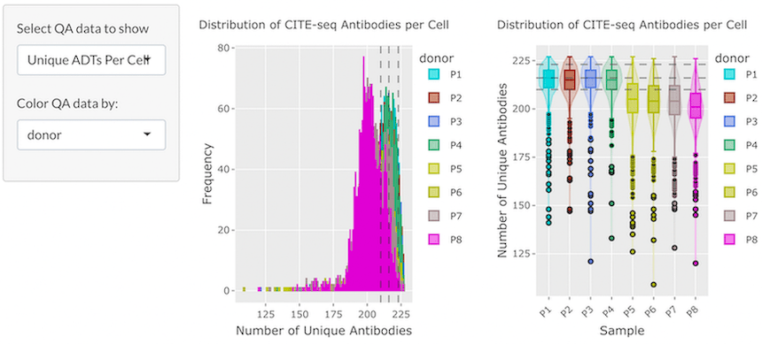
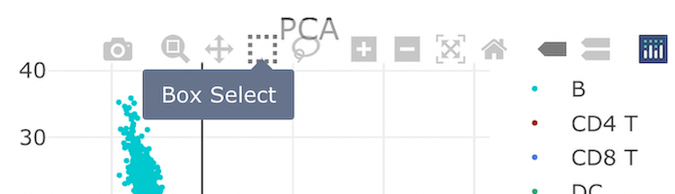
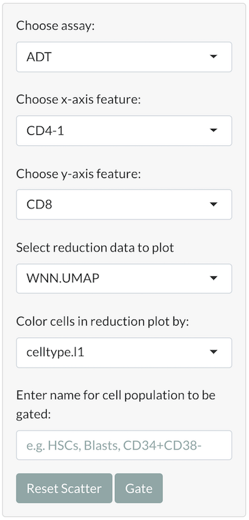

CITEViz: Interactively Classify Cell Populations in CITE-Seq via a Flow Cytometry-like Gating Workflow using R-Shiny
Garth Kong
Division of Oncologic Science, Knight Cancer Institute, Oregon Health and Science UniversityThai Nguyen
Division of Oncologic Science, Knight Cancer Institute, Oregon Health and Science UniversityWesley Rosales
Earle A. Chiles Research InstituteAnjali Panikar
Bioinformatics and Genomics Masters Program, University of OregonJohn Cheney
Bioinformatics and Genomics Masters Program, University of OregonBrittany Curtiss
Knight Cancer Institute, Oregon Health and Science UniversitySarah Carratt
Knight Cancer Institute, Oregon Health and Science UniversityTheodore Braun
Knight Cancer Institute, Oregon Health and Science UniversityJulia Maxson
Knight Cancer Institute, Oregon Health and Science UniversitySource:
vignettes/CITEViz.Rmd
CITEViz.RmdIntroduction

CITEViz is an R-Shiny program that allows users to classify cell clusters in CITE-Seq data by iteratively filtering the surface protein expression similar to flow cytometry. The most unique feature of CITEViz is the ability to physically gate cells, and the selected cells are immediately highlighted in dimension reduction space (e.g. UMAP, tSNE, PCA). This workflow provides rapid feedback to the users to assess cell cluster identity. Without CITEViz, the alternative workflow is to manually define and “jitter” gate boundaries (define four cutoff points), obtain the selected cell barcodes, re-plot the cells using a new set of antibody features, and re-filter the cells ad infinitum. By drawing physical gates to filter cells like in flow cytometry, CITEViz allows rapid exploration of cell clusters in CITE-Seq datasets.
The Interactive SummarizedExperiment Explorer (iSEE) is a Bioconductor package that shares some functionality with CITEViz. iSEE allows users to interactively plot SingleCellExperiment data (RNA-Seq, scRNA-Seq, CyTOF, etc.) with limited preprocessing steps and gating functionality. CITEViz is intended for users who want to apply a flow cytometry-like gating workflow to their CITE-Seq data. CITEViz is intended to be used towards the end of of their CITE-Seq analysis (including quality control, feature selection, dimension reduction) performed using Seurat. Both tools can accept data in SingleCellExperiment format and visualize basic quality control information.
The motivation to develop CITEViz was to bring bench and computational biologists together to analyze CITE-Seq data. In our experience, CITEViz helps leverage the flow cytometry background of bench scientists to quickly and reliably classify cell clusters, which can then be further analyzed by computational scientists. To serve an audience of bench and computational biologists who are familiar with R the programming language, we submitted CITEViz to the BioConductor repository.
Installation
Make sure you have R version 4.2.0 or later installed. We recommend installing CITEViz through the RStudio IDE using the following commands:
if (!require("BiocManager", quietly = TRUE))
install.packages("BiocManager")
BiocManager::install("CITEViz")Data Input Format
CITEViz accepts files in the RDS (.rds) format. The
preferred RDS file should include a Seurat object or a SingleCellExperiment
object. If a list of a single Seurat object is used, only
the object labeled “integrated” will be used.
The input Seurat or SingleCellExperiment
object must contain cell embeddings data for at least one
dimensional reduction method (e.g. PCA, UMAP, tSNE, etc.). If
the object contains data for more than one reduction, each reduction
must have a unique name. For a SingleCellExperiment object,
the main experiment and any alternative experiments in the
SingleCellExperiment object must contain assay count data
stored as “logcounts” (log-transformed, normalized
counts) or “normcounts” (normalized counts). Please
refer to the SingleCellExperiment
reference manual on Bioconductor for help on how to determine the types
of count data present in your SCE object. By default, CITEViz will use
the logcounts for plotting expression data. If logcounts are not
available, then CITEViz will use normcounts. If using a
SingleCellExperiment object that was generated from
Seurat-processed data or converted from a Seurat object,
then the logcounts in the SingleCellExperiment object are
analogous to the counts in the “data” slot for a given assay in a
Seurat object.
Sample Data
In this vignette, we used a downsampled version of the PBMC dataset
from Hao et.
al. 2021. The sample PBMC dataset for this vignette can be
downloaded as a 10K cell subset from Google Drive here
(small_pbmc.rds), or downloaded as a 2.5K cell subset from
the Bioconductor ExperimentHub,
as shown below.
library(ExperimentHub)
# create EH instance and query it
eh <- ExperimentHub()
query_results <- query(eh, "CITEVizTestData")
# get sample PBMC CITE-Seq dataset in one of two possible formats
file_seurat <- query_results[["EH7739"]] # in Seurat format
file_sce <- query_results[["EH7740"]] # in SingleCellExperiment format
# Export dataset to an external RDS file in your current working directory
# Export data as a Seurat object:
saveRDS(file_seurat, "pbmc-cite-seq-2500-seurat.rds")
# Export data as a SingleCellExperiment object:
saveRDS(file_sce, "pbmc-cite-seq-2500-sce.rds")Running CITEViz
To run CITEViz, use the following commands:
Uploading Data into CITEViz
After calling run_app() to start CITEViz, a file can be
uploaded using the file upload box at the top of any page in CITEViz.
After clicking the file upload box, a file explorer window containing
files in the user’s local file system will open. The user can select an
RDS file containing CITE-seq data to upload, and the same dataset will
be retained for exploration across all tabs.

Exporting Data from CITEViz
CITEViz uses interactive data visualization and exploration packages
such as Plotly and DT. Plotly plots
can be exported as PNG files, and DT datatables can be
copied, printed, or exported as files for downstream analysis.
After gating for cell populations of interest (see Gating section of this vignette), the metadata for each gate is saved in an internal Gate object. These metadata include cell barcodes that can facilitate downstream analysis such as differential gene expression. To download this gating data as a list of gates in RDS format, the user can click the “List (.rds)” button at the bottom of the gating page.
Quality Control
The first step of analysis is to assess the quality of sequencing
data. Here we provide QC plots that display data for common metrics such
as gene or antibody-derived tag (ADT) counts per assay, number of unique
ADTs, and mitochondrial expression, which can be visualized by any
categorical metadata in the user’s Seurat or
SingleCellExperiment object. Dotted lines in each QC plot
represent the values at which 50%, 75%, and 95% of the data falls at or
below that value.

Clustering
The Clustering page allows the user to view cell clusters in two- and three-dimensional space. These clusters can be colored by any categorical metadata, and the user can select dimensionality reductions (e.g., UMAP, PCA, etc.) to view from a dropdown menu.

When the user’s cursor hovers over the 2D reduction plot, a Plotly toolbox with labeled options will appear. From this toolbox, the user can zoom, pan, download, and reset a plot by selecting an option. The user can also use the box or lasso selection tool to select specific cells in a plot. The metadata for selected cells appears in the scrollable, interactive data table below the plots, and the user can print or copy this data to their clipboard.

Feature Expression
CITEViz supports RNA and ADT feature expression visualizations in both one-dimensional and two-dimensional formats. On the feature expression tabs of CITEViz, cell clusters are displayed in a dimensional reduction plot. These cell clusters can be colored by expression levels of selected RNA and/or ADT features. Similar to the clustering page, the user can select the type of dimensional reduction to view.
One-Dimensional (1D) Feature Expression
In 1D feature expression, cells in a dimensional reduction plot are colored by expression levels for one RNA or ADT feature. The user can select a specific RNA or ADT feature from a dropdown menu.

Two-Dimensional (2D) Feature Expression
Co-expression of features greatly facilitates a holistic view of single-cell multi-omic datasets. In 2D feature expression, cells in a dimensional reduction plot are colored by expression levels for two gene and/or ADT features simultaneously. The user can select specific gene and/or ADT features from dropdown menus. CITEViz can visualize co-expression of features from the same assay (i.e. two genes or two ADTs), as shown below, or two features from different assays (i.e. one gene and one ADT).

Gating
Forward Gating
A key feature of CITEViz is that users can iteratively gate (subset) cells using antibody markers, and the selected cells are immediately highlighted in the dimensional reduction space (e.g. UMAP, PCA, tSNE, etc.). Users can subset cells using one or more gates to explore specific cell populations similar to flow cytometry.
General Workflow
- Select plot settings: From dropdown menus in the sidebar panel, the user can select an assay (e.g. ADT) and two assay features (e.g. CD4, CD8) for which to plot normalized expression levels. The user can also select a reduction (e.g. UMAP) for which to plot dimensional reduction embeddings, and can color the cells in the reduction plot by a discrete metadata category (e.g. cell type).

- Select cells: When the user’s cursor hovers over each plot on the gating page, a Plotly toolbox with labeled options will appear. From this toolbox, the user can choose a cell selection tool, zoom, pan, download, or reset a plot by selecting an option. The user can use the box or lasso selection tool to select specific cells in the feature scatter plot. When cells in the feature scatter plot are selected, the corresponding cells in the reduction plot will be highlighted.
- Label the selected cells: To input a name for a subset of cells to be gated, use the text-input field of the sidebar panel prior to clicking the gate button.
- Click the gate button: After gating a subset of cells, information about the newly-created gate will be displayed in a scrollable, interactive data table below the plots.
- Label the selected cells: To input a name for a subset of cells to be gated, use the text-input field of the sidebar panel prior to clicking the gate button.
- Click the gate button: After gating a subset of cells, information about the newly-created gate will be displayed in a scrollable, interactive data table below the plots.
Additional Features
- Users can click on previous gates from the data table to view the feature scatter plot of that cell population. Using this feature, users can also revert back to a previously created gate for further subsetting and gating.
- To permanently delete all gating information in the data table, click the “Clear All Data” button.
- To rename the selected cell subset after gating, double-click in the corresponding area of the data, then press the Tab key or click outside of the table.

- To reset the feature scatter plot and view the entire input cell population, click the “Reset Scatter” button.
- To view detailed gating data, users can download this data in a variety of formats listed at the bottom of the gating page.
- To reset the colors of the cells in the reduction plot, double-click anywhere in the feature scatter plot.
Example
In the following example, we demonstrate a 2-layer gate to isolate cells with specific levels of CD11b-1 and CD45-1 (mixture of myeloid and lymphoid cells) from the whole cell population, followed by the isolation of CD8+ CD4- cells from this first subset to view the CD8+ T-cell subpopulation:
- Select cells with relatively low levels of CD11b-1 and CD45-1.

- From the cells in the first gate, select cells with low levels of CD4 and high levels of CD8.

Back-Gating
Users can back-gate on a selection of cells in a reduction plot and highlight them in feature space. On the back-gating page, users can highlight cells in feature space from a “labels-first” or “top-down” workflow. For example, users can select a range of cells from the reduction plot (e.g. UMAP, PCA etc.) and locate them in the feature scatter plot for more extensive data exploration.

Session Info
sessionInfo()
#> R version 4.3.1 (2023-06-16)
#> Platform: x86_64-pc-linux-gnu (64-bit)
#> Running under: Ubuntu 22.04.3 LTS
#>
#> Matrix products: default
#> BLAS: /usr/lib/x86_64-linux-gnu/openblas-pthread/libblas.so.3
#> LAPACK: /usr/lib/x86_64-linux-gnu/openblas-pthread/libopenblasp-r0.3.20.so; LAPACK version 3.10.0
#>
#> locale:
#> [1] LC_CTYPE=C.UTF-8 LC_NUMERIC=C LC_TIME=C.UTF-8
#> [4] LC_COLLATE=C.UTF-8 LC_MONETARY=C.UTF-8 LC_MESSAGES=C.UTF-8
#> [7] LC_PAPER=C.UTF-8 LC_NAME=C LC_ADDRESS=C
#> [10] LC_TELEPHONE=C LC_MEASUREMENT=C.UTF-8 LC_IDENTIFICATION=C
#>
#> time zone: UTC
#> tzcode source: system (glibc)
#>
#> attached base packages:
#> [1] stats graphics grDevices utils datasets methods base
#>
#> other attached packages:
#> [1] CITEViz_0.1 BiocStyle_2.28.1
#>
#> loaded via a namespace (and not attached):
#> [1] tidyselect_1.2.0 viridisLite_0.4.2
#> [3] golem_0.4.1 dplyr_1.1.3
#> [5] bitops_1.0-7 lazyeval_0.2.2
#> [7] fastmap_1.1.1 SingleCellExperiment_1.22.0
#> [9] RCurl_1.98-1.12 promises_1.2.1
#> [11] digest_0.6.33 mime_0.12
#> [13] lifecycle_1.0.3 ellipsis_0.3.2
#> [15] SeuratObject_4.1.4 magrittr_2.0.3
#> [17] compiler_4.3.1 config_0.3.2
#> [19] rlang_1.1.1 sass_0.4.7
#> [21] tools_4.3.1 utf8_1.2.3
#> [23] yaml_2.3.7 data.table_1.14.8
#> [25] knitr_1.44 S4Arrays_1.0.6
#> [27] htmlwidgets_1.6.2 sp_2.1-1
#> [29] DelayedArray_0.26.7 abind_1.4-5
#> [31] purrr_1.0.2 BiocGenerics_0.46.0
#> [33] desc_1.4.2 grid_4.3.1
#> [35] stats4_4.3.1 fansi_1.0.5
#> [37] xtable_1.8-4 colorspace_2.1-0
#> [39] future_1.33.0 progressr_0.14.0
#> [41] ggplot2_3.4.4 globals_0.16.2
#> [43] scales_1.2.1 SummarizedExperiment_1.30.2
#> [45] cli_3.6.1 crayon_1.5.2
#> [47] rmarkdown_2.25 ragg_1.2.6
#> [49] generics_0.1.3 future.apply_1.11.0
#> [51] httr_1.4.7 cachem_1.0.8
#> [53] stringr_1.5.0 zlibbioc_1.46.0
#> [55] parallel_4.3.1 BiocManager_1.30.22
#> [57] XVector_0.40.0 matrixStats_1.0.0
#> [59] vctrs_0.6.4 Matrix_1.6-1.1
#> [61] jsonlite_1.8.7 bookdown_0.36
#> [63] IRanges_2.34.1 S4Vectors_0.38.2
#> [65] listenv_0.9.0 systemfonts_1.0.5
#> [67] attempt_0.3.1 plotly_4.10.2
#> [69] tidyr_1.3.0 jquerylib_0.1.4
#> [71] glue_1.6.2 parallelly_1.36.0
#> [73] pkgdown_2.0.7 codetools_0.2-19
#> [75] DT_0.30 stringi_1.7.12
#> [77] gtable_0.3.4 later_1.3.1
#> [79] GenomeInfoDb_1.36.4 GenomicRanges_1.52.1
#> [81] munsell_0.5.0 tibble_3.2.1
#> [83] pillar_1.9.0 htmltools_0.5.6.1
#> [85] GenomeInfoDbData_1.2.10 R6_2.5.1
#> [87] textshaping_0.3.7 rprojroot_2.0.3
#> [89] Biobase_2.60.0 evaluate_0.22
#> [91] shiny_1.7.5.1 lattice_0.21-8
#> [93] memoise_2.0.1 httpuv_1.6.11
#> [95] bslib_0.5.1 Rcpp_1.0.11
#> [97] xfun_0.40 fs_1.6.3
#> [99] MatrixGenerics_1.12.3 pkgconfig_2.0.3